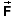

The terms thermal energy and internal energy are taken to mean the same thing here. "Internal energy" is the standard technical term while "thermal energy" is perhaps a bit more colloquial.
Suppose a block is sliding on a horizontal table with friction. An applied horizontal force appl is acting on the block. The applied force is equal in magnitude and opposite in direction to the friction force so that the net force acting on the block is zero and the block is moving with constant velocity. Figure 1 below illustrates these conditions with an image taken with the applet on Page 2 at time t = 0.
Figure 1
The table surface is represented as an x-axis pointing to the right. The "velocitometer" shows the x-component of the block's velocity to be 2.0 m/s.
Suppose we freeze the motion at t = 1.16 s. Figure 2 below shows data from the applet's data box pertaining to this instant and energy bars corresponding to the instants t = 0 and t = 1.16 s.
Figure 2
The work Wappl done on the block by the applied force during the 1.16-s time interval is equal to 22.74 J and represented by the purple bar in the box for t = 1.16 s. The kinetic energy has not changed during this time interval because the block's speed is constant. Where did the energy go that has been supplied in the form of applied work?
All of this energy was converted into internal energy of the block-table system. Both the block and the table are getting a bit warmer in the process. The internal energy of the block-table system is denoted by the symbol U. The data box shows that the change DU in this internal energy during the 1.16-s time interval is 22.74 J, exactly the same as the amount of applied work done. The green bar representing DU in the energy box for t = 1.16 s has exactly the same height as the purple bar representing the applied work done.
Go to Page 2 to repeat this experiment with the applet yourself. Take the block's mass to be 5.0 kg, set the kinetic coefficient of friction to 0.20, set the magnitude of the applied force to 9.8 N, and set the velocity to 2.0 m/s. This reproduces the conditions on which Figures 1 and 2 are based.
For detailed information on how to use the applet, please see Help, Assumptions, and ShowMe under Applet Help on the applet's Help menu.
For more suggestions on what to investigate with the applet, see Activities under Related Items.